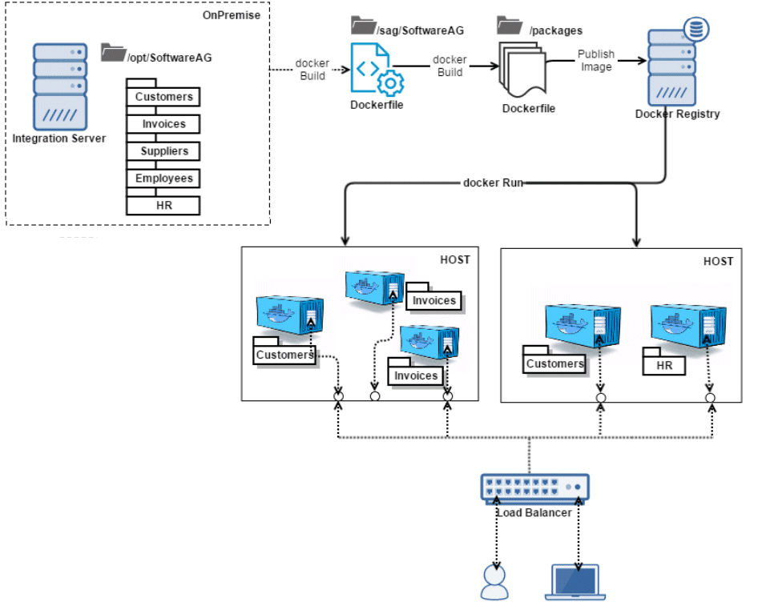

What Is webMethods Microservices Runtime?
Software AG offers a lightweight container called webMethods Microservices Runtime to host microservices you develop in Software AG Designer. Using Microservices Runtime, you can deliver microservices as an Integration Server package that includes a set of related services, interfaces, document types, and triggers that subscribe to topics or queues, or as a set of related packages of this kind (for example, five packages relating to Human Resources functions).
Each microservice can run in its own Microservices Runtime and can communicate with lightweight mechanisms such as an HTTP resource API. However, you can also execute multiple microservices in the same Microservices Runtime. This hybrid solution enables you to separate microservices when needed, but also to group them when necessary. For example, suppose that you have two microservices that need to be scaled together in similar ways (that is, when you need a new instance of one, you need a new instance of the other). If you discover that one microservice is more heavily loaded than the other, or needs to be enhanced or updated more often, you could deploy the two microservices to separate Microservices Runtimes. If both microservices tend to be updated at the same time, you could cohost them in the same Microservices Runtime.
Microservices Runtime is fully compatible with webMethods Integration Server and can also host services you develop using Software AG Designer and Integration Server. While Microservices Runtime is optimized to have a reduced disk and memory footprint, you can convert it into a full Integration Server by installing additional modules, such as support for an external database.
Microservices Runtime provides out-of-the-box support for dynamic lookup of service endpoints using the open-source service registry named Consul. You can make your microservice available for remote access by registering the endpoint of the microservice container instance in the Consul service registry. Microservices Runtime provides services for automating the registration and deregistration process. Microservices Runtime provides facilities to look up the endpoint information which can be used to call the microservice at run time. You can also create your own package integrating with any other service registry provider. The package would provide services similar to those described for Consul in this guide.
Microservices Runtime is optimized for execution in a Docker container. You can run a microservice or a set of related microservices in a Docker container, precluding the need to purchase expensive virtual machines. Docker images include configuration, enabling you to deploy the exact same configuration anywhere. The Docker image can include one package or a set of related packages.
